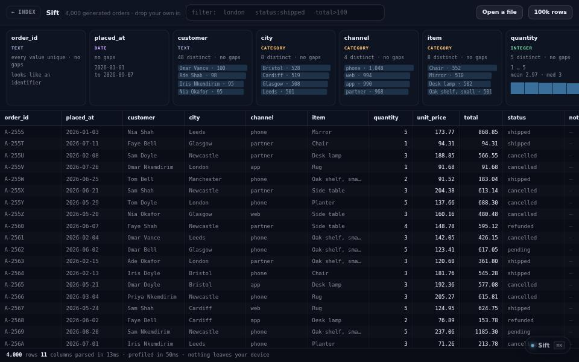

app · about 5 min · The Workshop Shallows
Sift
Drop a spreadsheet in and it tells you what is actually in it: what each column holds, where the gaps are, what the numbers look like.

The problem
Seeing what is in a big spreadsheet should not mean uploading it somewhere.
What it does
- Drop a CSV in and see what each column holds
- Gaps, types and distributions at a glance
- A hundred thousand rows without stuttering
The most interesting decision
The parser is the point
Splitting on commas silently breaks any row with a comma inside quotes, so the parser is a character loop that handles quoting properly.
Built with
- CSV parser
- Column type inference
- Gap + distribution profiling
Evidence
A hundred thousand rows without stuttering. Nothing is uploaded. Read its tests
Its world
A sieve that rains data through it and stacks what it finds in columns.